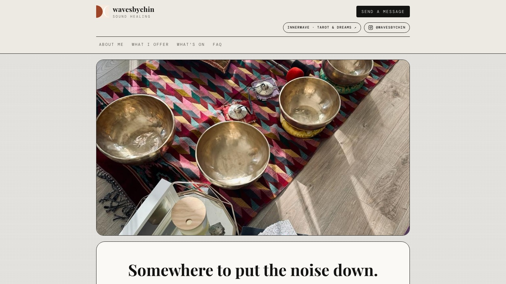
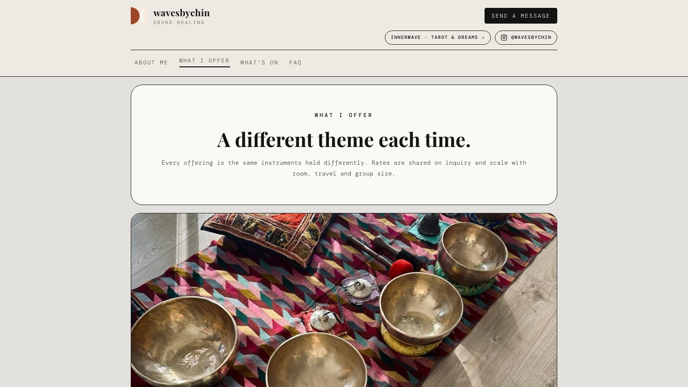
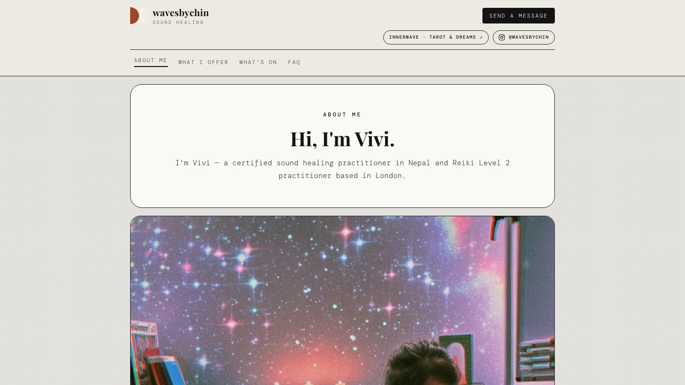

Side project
Wavesbychin
The site for my own sound healing practice in London — sound baths, reiki, cacao and breathwork, written and built by hand and published on GitHub Pages.

Background
I trained as a sound healing practitioner in Nepal, and the practice needed somewhere to live that was mine rather than a booking platform’s. Design tokens, copy and interactions came out of a handoff document first, so the site could be built once and then edited as content rather than redesigned every time something changed.
How it works
- Nothing to compile —
index.html,styles.cssandapp.js, with the colours, type and radii as custom properties in:root. Open the file and it runs; push tomainand GitHub Pages redeploys in about a minute. - Every page is linkable — the eight pages are routes in the URL hash, so the back button works and a single page can be sent to someone on its own.
- Copy is data, not markup — the timeline, the FAQ, the moon rituals and the photo slots sit in one block at the top of the script, which is what makes it editable between sessions rather than between redesigns.
- Enquiries go somewhere real — the forms write to a Supabase table with an insert-only policy, and analytics sits behind a consent banner because the visitors are in the UK and EU.
Screens

